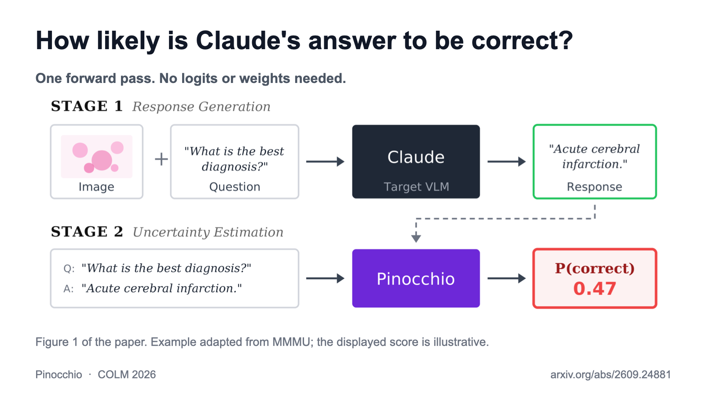

Frontier LLMs like Claude don’t come with uncertainty estimates, and their verbalized confidence is bad. We trained Pinocchio, a lightweight model that assigns confidence to outputs of popular API models, making it fast and easy to get well-calibrated uncertainty estimates. 📄🧵

279/280